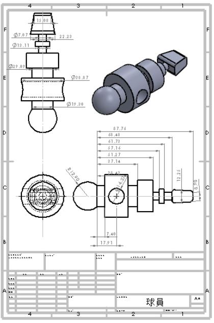

期末報告
我個人在期末分組報告做的事情為初版零件圖繪製和初版球軌繪製
初版的零件圖是用SOULIDWORKS繪製，因為onshape和SOULIDWORKS可以互想轉換，所以就先用熟悉的檔案來繪製
球員桿
擊球裝置

球門

球員

球場
不過後續為了同一性，在分組網站上上傳的版本改為用onshape畫的版本
另外展示初版球軌
為了打造副斜面，需要用SOULIDWORKS的螺旋線的功能，所以就改用SOULIDWORKS畫，畫完再改成onshape


不過剛繪製的時候部分東西的大小還未出來，尺寸都是大概估的，後續又做了第二版
Week 8 << Previous Next >> Fusion 360